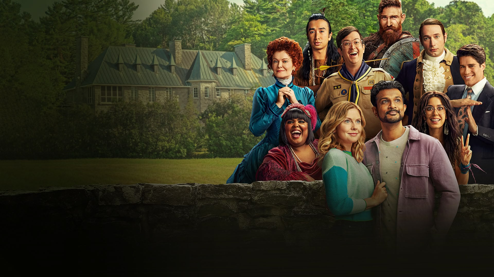

Comedia sobrenatural
Ghosts es una comedia de situación, fantasía y humor absurdo. La trama sigue a Samantha, una periodista de Nueva York que hereda una gran mansión de un pariente lejano. Tras sufrir un accidente doméstico y recibir un fuerte golpe en la cabeza, Samantha atraviesa una experiencia cercana a la muerte que le otorga la habilidad de ver y hablar con los fantasmas que habitan la propiedad.
Locación y Producción
Aunque la historia transcurre en la zona rural del estado de Nueva York, el episodio piloto se filmó en Los Ángeles y el resto de la serie se produce en escenarios y sets en Montreal, Quebec (Canadá).
Creadores Originales
Basada en la serie británica homónima creada por Mathew Baynton, Simon Farnaby, Jim Howick, Martha Howe-Douglas, Laurence Rickard y Ben Willbond.